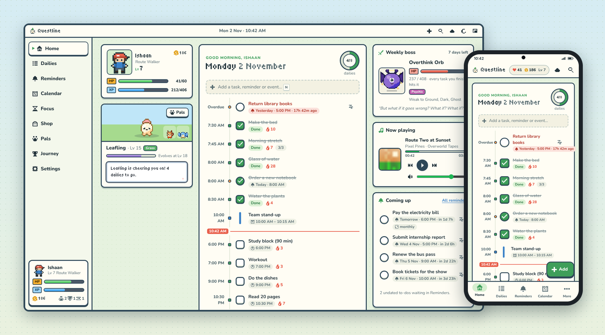
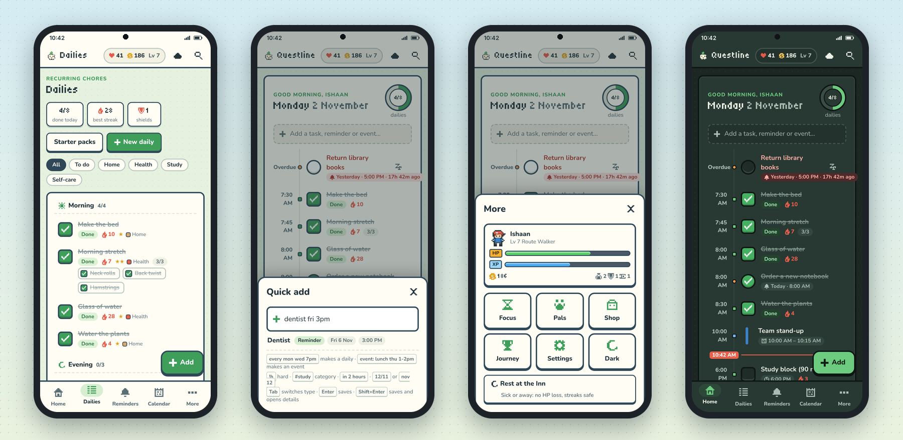
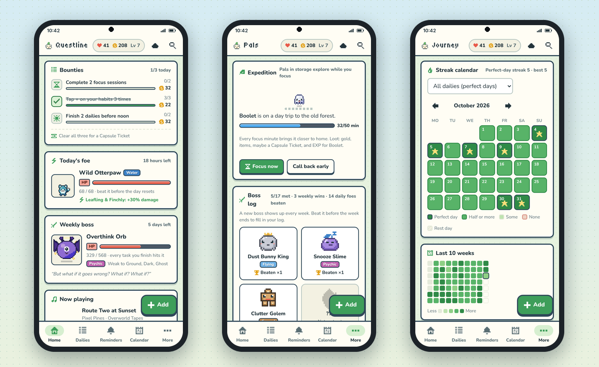

Questline
A cozy pixel-RPG planner. Daily chores with times, reminders, a full-page calendar, a focus timer and a team of pals that grow as you get things done.
Open in your browser Download for Windows Download for Android Source codeThe browser version works on any computer, iPhone and iPad, needs nothing installed, and syncs with the apps when you sign in with Google.

What it does
- Dailies, habits and reminders earn XP, gold and pal EXP; missing them costs a little HP.
- A daily foe, a weekly boss and three daily bounties to aim for; pals to collect, evolve and send on expeditions while you focus.
- A weekly review, a streak calendar and a perfect-week bonus.
- An Android home-screen widget to tick off today's list without opening the app.
- A calendar page with your own events and, optionally, your Google Calendar.
- A full-screen focus mode with Pomodoro, timer and stopwatch.
- Optional Sign in with Google to sync between your devices and keep daily backups in your own Google Drive.
- Runs in any browser too, offline after the first visit, and installs like an app (on iPhone: Share → Add to Home Screen).


Your data
Questline has no servers. Everything is stored on your device (or in your browser) and, if you sign in, in a Questline folder in your own Google Drive. Read the privacy policy.